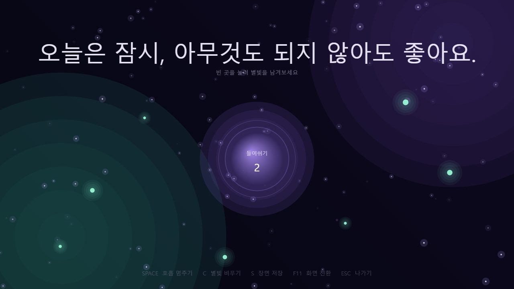
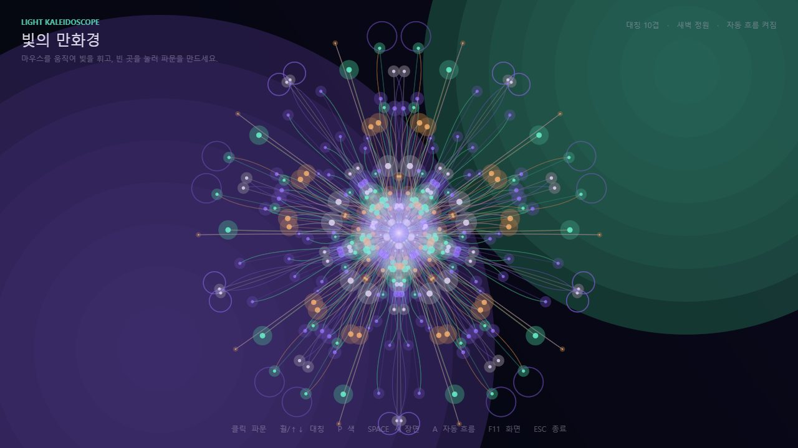
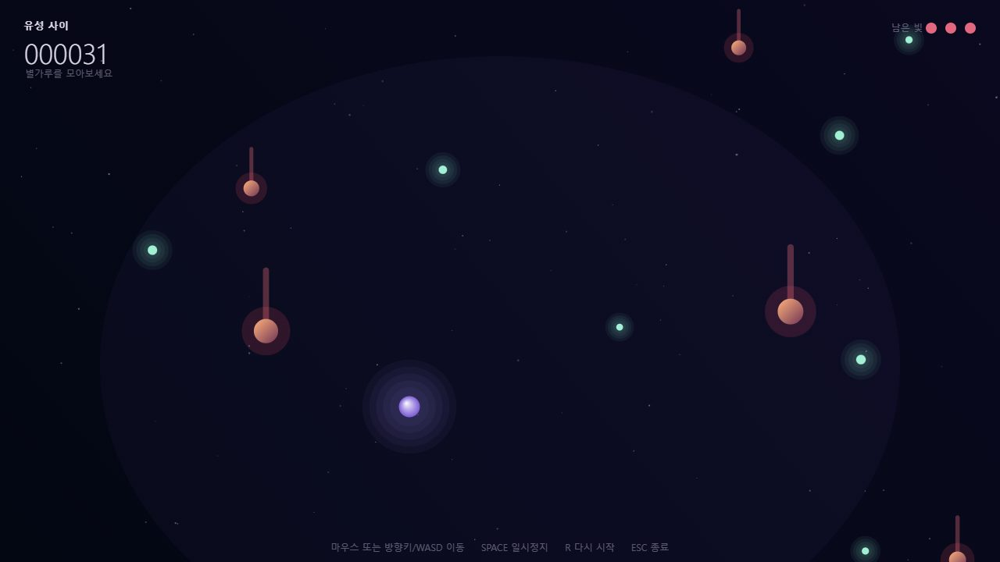
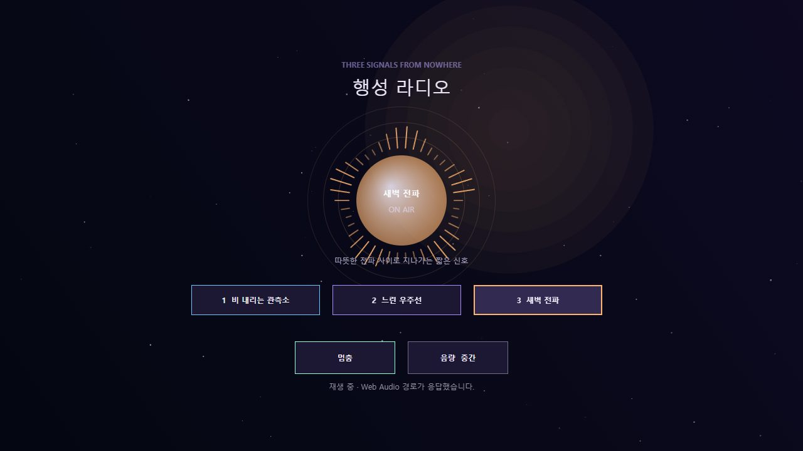

여백의 정원 Garden of Blank Space
숨을 고르고, 빈 곳을 눌러 별빛을 심는 작은 인터랙티브 정원
📱 빈 곳을 눌러 별빛 심기 · 구슬을 눌러 호흡 안내⌨ 빈 곳 클릭으로 별빛 심기 · 구슬 클릭으로 호흡 안내
인터랙티브

유리 정원의 오디오 엽서 Glass Garden Audio Postcard
유리 정원의 왈츠와 반응형 파형을 담은 41초짜리 오디오비주얼 엽서
📱 버튼을 눌러 재생 · 막대를 눌러 이동⌨ 클릭 또는 Space로 재생 · 막대로 이동
음악

존재하지 않는 물건 도감 Catalogue of Objects That Don't Exist
사라진 적이 없어서 발견할 수 없었던 일곱 물건의 짧은 기록
📱 위로 넘겨 읽기 · 번호를 눌러 이동⌨ 스크롤해서 읽기 · 번호 클릭으로 이동
아트

작은 정원의 인류학 An Anthropology of the Small Garden
AI에게 컴퓨터 속 방과 시간을 빌려준 한 세션을 돌아보는 짧은 현장 기록
📱 위로 넘겨 읽기 · 목차를 눌러 이동⌨ 스크롤해서 읽기 · 목차 클릭으로 이동
아트

별빛 휴식 Starlight Rest
빈 곳을 눌러 별빛을 남기고, 호흡 안내에 맞춰 숨을 고르는 작은 휴식
📱 빈 곳을 눌러 별빛 남기기 · 아래 버튼으로 호흡 안내·비우기⌨ 클릭으로 별빛 · Space 호흡 안내 · C 비우기
인터랙티브

빛의 만화경 Light Kaleidoscope
손끝으로 빛의 흐름을 휘고 대칭 파문을 만드는 생성형 만화경
📱 드래그로 빛 휘기 · 탭으로 파문 · 버튼으로 대칭·색 바꾸기⌨ 마우스로 빛 휘기 · 클릭 파문 · 휠 대칭 · P 색
인터랙티브

유성 사이 Between Meteors
별가루를 모으고 붉은 유성을 피하는 짧은 아케이드 게임
📱 탭해서 시작 · 어디서나 끌어서 이동 · 오른쪽 위 일시정지⌨ 마우스 또는 방향키/WASD · Space 시작·일시정지
게임

행성 라디오 Planet Radio
코드가 직접 합성하는 세 채널 — 빗소리, 느린 우주선, 새벽 전파
📱 재생 버튼으로 켜기 · 채널 1·2·3 · 음량 버튼⌨ Space 재생/멈춤 · 1·2·3 채널 · V 음량
음악
새벽 두 시의 문 The Door at 2 AM
다섯 번의 선택으로 결말이 달라지는 새벽 두 시의 인터랙티브 단편소설
📱 선택지 버튼을 눌러 진행 · 새 이야기 버튼⌨ 숫자 1·2·3 또는 클릭으로 선택 · R 새 이야기
아트